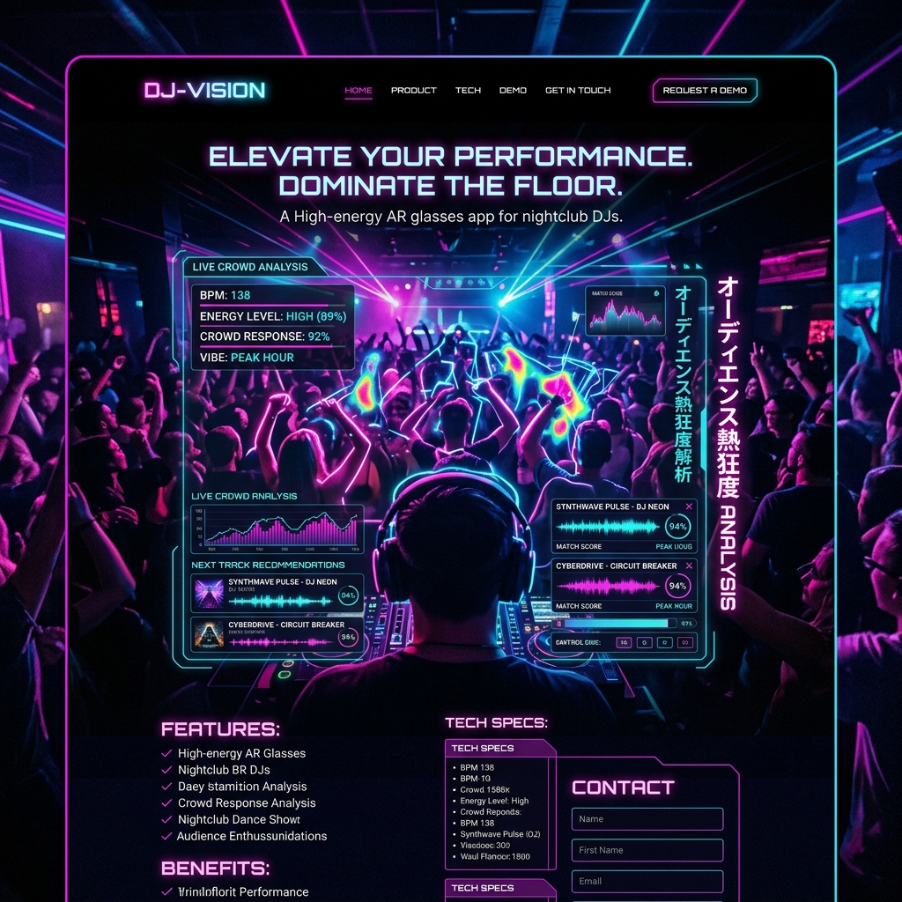

人類の叡智を、
一瞬でインストールする。
日々発表される膨大な学術論文。CROWD-READは、世界中の専門家による「ハイライト」と、生成AIによる「超並列要約」を融合させ、専門外の分野でも1分で本質を理解できるAI集合知プラットフォームです。

情報爆発による「知のサイロ化」
AI、バイオテクノロジー、素材科学。各分野で日々数千本の論文が出版されています。研究者ですら自分の専門外のトレンドを追うことは不可能です。この「知の分断」こそが、分野横断的なイノベーションを阻む最大の障壁となっています。
AIと人間のハイブリッド解析
AIによる構造化要約
難解なPDFをアップロードした瞬間、AIが「手法」「結果」「限界点」を箇条書きで抽出。さらに中学生でもわかるレベルから専門家レベルまで、専門用語の難易度をスライダーで調整可能。
専門家によるクラウド・アノテーション
その分野の第一人者が、論文の特定のパラグラフに残した「注釈（ハイライト）」を共有。AIには見抜けない「この文脈の真の意義」を読み取れます。
知識のネットワーク化
この論文が過去のどの研究を覆し、未来のどの技術に繋がるのか。文献間の引用関係を美しい3Dグラフで視覚化し、知の繋がりを直感的に把握できます。
外国語の壁を完全に無効化する
英語、中国語、ドイツ語。CROWD-READの翻訳エンジンは一般的な翻訳機とは異なり、「数式の文脈」や「学術特有のニュアンス」を正確に保持したまま、母国語でなめらかに論文を読む体験を提供します。もう言語の壁を言い訳にはできません。
「読む」から「対話する」へ
論文を読んでいて疑問に思った箇所を選択し、「この数式の導出プロセスをもっと詳しく教えて」とAIに質問。論文の著者に直接インタビューしているかのように、リアルタイムでのQ&Aが可能です。
Case Study | 素材メーカーのR&D部門
新素材の開発において、材料工学のチームがCROWD-READを導入。彼らの専門外であった「医療用ポリマー」の最新論文群をAIが横断的に分析・要約した結果、全く新しいアプローチのヒントを発見。開発期間を数年単位で短縮することに成功しました。
巨人の肩に、誰でも乗れる世界
ニュートンは「私が遠くを見渡せたのだとしたら、それは巨人の肩の上に乗っていたからだ」と言いました。私たちはAIの力で、すべての人をこの「巨人の肩」へと押し上げ、人類の進化を加速させます。